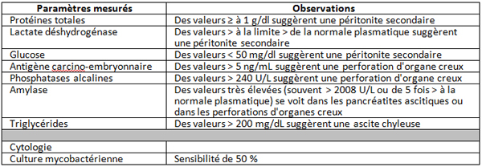
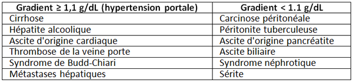

Bienvenue Sur Medical Education
Ponction d'ascite
AdulteSpécialité : gastro-entérologie /
Indications
- Premier épisode d'ascite de cause inconnue (hypertension portale, cancer, infection, pancréatite)
- Nouvel épisode d'ascite avec suspicion de péritonite bactérienne (fièvre, douleurs abdominales, encéphalopathie, altération de la fonction rénale, hyperleucocytose, saignement gastro-intestinal, choc)
-
Améliorer la fonction respiratoire due à une ascite importante, réfractaire ou ne répondant pas aux diurétiques
Contre-indications
- Coagulation intravasculaire disséminée (beaucoup de patients sont en insuffisance hépatique avec une thrombocytopénie et les troubles de la coagulation ; malgré cela, l'incidence d'une complication hémorragique compliquant une ponction d'ascite est extrêmement faible)
- Infection cutanée, hématome, cicatrice chirurgicale au point de ponction
-
Contre-indications relatives :
- grossesse
- splénomégalie, hépatomégalie
- obstruction intestinale (mettre au préalable une sonde nasogastrique)
- adhésions intra-abdominales
- vessie distendue (mettre au préalable une sonde urinaire)
-
Dans ces cas, l'usage de l'échographie peut limiter le risque iatrogène
Présentation du matériel
- Il existe des kits spécifiques pour ponction d'ascite (avec obturateurs distaux rétractables, plusieurs trous distaux sur le cathéter permettant un débit de drainage plus rapide)
- L'utilisation de simple cathéter intraveineux n'est pas recommandée
-
Equipement :
- gants stériles
- masque
- solution antiseptique
- champ stérile
-
pour l'anesthésie locale :
- aiguille de 22 ou 25 G
- lidocaïne 1 ou 2%
-
seringue de 10 mL
Description de la technique
fichier_537 fichier_537 - - - Ponction d'ascite
- Expliquer la procédure au patient
- Patient en décubitus dorsal avec la tête légèrement surélevée
-
Points de ponction possibles :
- 2 cm au-dessous de l'ombilic, central (peu de vaisseaux) ou dans le quadrant inférieur droit ou gauche
- ou 2 à 4 cm de l'épine iliaque antérieure
- chez l'obèse, l'approche latérale gauche est préférable car la paroi abdominale est plus fine et que la profondeur du liquide d'ascite est plus grande
- l'échographie permet de distinguer les endroits où il existe des organes solides proches de la paroi spécialement chez les obèses ou chez les patients aux ATCD de chirurgie abdominale
- Marquer le point de ponction au feutre
- Mettre les gants stériles et le masque
- Nettoyer la peau avec une solution antiseptique de façon centrifuge
- Coller le champ stérile
- Faire une anesthésie locale avec la lidocaïne en aspirant régulièrement sur le piston afin d'éviter d'injecter en intravasculaire
- Une perte de résistance est ressentie lors de la pénétration intrapéritonéale. Arrêter alors la progression de la seringue
- Injecter alors 3 à 5 mL d'AL pour anesthésier le péritoine pariétal
- Faire un petit trou cutané (ex : avec une aiguille de 18G) afin de faciliter l'entrée du cathéter
- Fixer une seringue de 10 mL à l'extrémité distale du cathéter
-
2 techniques d'insertion du cathéter :
- l'angle cutané que fait le cathéter avec la peau est de 45° vers le bas
- la technique en « Z » consiste à tirer la peau vers le bas avec les doigts sur 2 cm avant l'insertion de l'aiguille du cathéter et de garder cette position jusqu'à la position finale du cathéter en intrapéritonéal
- ces 2 techniques limitent le risque de fuite cutanée de liquide intrapéritonéal
- Tenir la seringue avec la main dominante et le bout de l'aiguille avec l'autre main
- Pousser progressivement l'aiguille en aspirant tous les 2-3 mm
- Arrêter la progression au moment de la perte de résistance et quand du liquide d'ascite est aspiré dans la seringue
- Pousser alors uniquement le cathéter et enlever l'aiguille
- Il est possible de retirer 30 à 60 mL de liquide avec une grosse seringue de 60 mL
- Si le drainage doit être plus important, connecter le cathéter à un prolongateur jusqu'à une bouteille de vide
-
Analyse de liquide péritonéal :
- un cube sec pour mesure de l'albumine
- un tube EDTA pour analyse cellulaire
- 2 récipients pour cultures aérobie et anaérobie
 fichier_535 Tableau Analyse du liquide d'ascite
 fichier_536 Tableau Diagnostics étiologiques en fonction du gradient d'albumine entre le plasma et l'ascite
Complications
- HoTA, hyponatrémie si évacuation d'une grande quantité de liquide d'ascite
- Syndrome hépatorénal
-
Complications plus rares :
- fuite persistante de liquide d'ascite
- infection locale
- hématome de la paroi abdominale
- lésions d'organes intra-abdominaux
-
ponction de l'artère épigastrique inférieure
Bibliographie
- TW. Thomsen, RW. Shaffer, B White, GS. Setnik. Paracentesis. N Engl J Med 2006;355:e21.
Auteur(s) : Patrick PLAISANCE